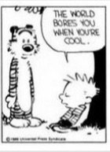

--Alan Watts
"Only the ego makes its own demise seem dramatic.”
--Adyashanti
Lately several friends have been experiencing something similar, though their situations all look different.
One is finding their long-time marriage tedious-- the multi-year spouse not exciting, the sex dull, all surprises long gone. Another questions if they’re living their best life, in the right job, choosing the right hobbies, charity work, location, family. Another laments the loss of the bliss they felt for a few weeks. A few others find their long-time anxiety and depression have finally lifted, and now…
ZZzzzzzzz.
They're borrrred.
Ugghhh, how we hate boredom. After all, this can’t be what life is supposed to be- this tedious one foot in front of the other, this monotonous same same day after day.
Life is supposed to be stimulating, fulfilling, happy. Where's the fun, the excitement?
There’s obviously something wrong.
Because we all know that boredom is bad. We all know that it’s wasteful of the life we’re given, a constant slap in the face that we’re living wrong.
Boredom is just so dang…. empty.
No one really likes that. Humans like fill-‘er-up, extra, more. Big, intense, grand.
Empty is, by definition, nothing. And we can’t fill up on that.
So we need to get busy trying to make things right.
Boredom’s gotta go.
We look for ways to be more satisfied with life- get the new job, the new partner, a new city, new sexual quirk. Study up and get the bliss, joy, enlightenment at last.
Or maybe we replace the usual old project of getting rid of anxiety or depression with the new project of figuring out how to not be bored.
Whatever, as long as we can replace the humdrum with a more peak experience.
And if we can’t do that with happy fun times for whatever reason, then we’ll do it with failure, guilt, and shame.
Which is what comes when we know we’re wasting our one wild and precious life. (Damn you, Mary Oliver. ***see below)
Either way, whether we’re filled with intense bliss or intense pain and suffering…
It’s not boring.
With intensity and big feeligns, emptiness gets filled.
And that’s what we’ve been wanting all along, right?
Um,… yay?
The thing is, it's the human sense of self that wants more of everything (including itself). It's the human sense of self that desires thrills. It's the human sense of self that evaluates experience...
and then also finds it lacking.
Because really, what other creature, large or small, feels that it’s not enough just to be alive? What other creature feels an obligation to "make the most" of its time here?
So unsatisfying, this self business. So full of discontent.
Which is why, maybe we've had this boredom thing all wrong.
Maybe, like any cat or mosquito or armadillo, we’re already living our best life, already making the most of life, already being all we can be.
It could be that it’s not possible to waste this one wild and precious life.
No matter what we're "doing" with it. Even if we’re just sitting on the couch staring at the ceiling.
Not to say that sitting around is preferable to bungee jumping, or vice versa.
It’s just that there may simply be no need to constantly try to juice life up into something different or better.
There may be no need to constantly aim for peak bigness, no need for self-improvement projects, no need for the demandy-human game of, “I want more different better gimme.”
Because without all the certainty that there’s some better high experience out there, we might be shocked to find quiet contentment in what’s already here- in the “boredom,” in the ordinary, the not-special, the not-thrilling. The husband as he is, the job, the homework, the house chores.
We might be shocked to discover the enoughness of this life, as it is, when we're not stewing over whether it’s what we want.
When we're not placing our order for something else, we might discover a whole bunch of not-lack in the empty.
Which might be a rather different way of experiencing the exact same life we’ve already got.
I mean, wouldn’t it be something if the quiet, not-special, moment by moment, unevaluated beingness we've been trying to avoid, is actually what we’ve wanted all along? What we’ve wanted bliss and happiness and excitement to get us all this time?
Here it is.
That's pretty exciting.
Definitely not boring.
So is this all there is?
Yes.
Is this all there is?
Yes.
Is this all there is?
Yes.
Yes.
Yes.
Yes.
Click here to get your Mind-Tickled every week.
***
"Who made the world?
Who made the swan, and the black bear?
Who made the grasshopper?
This grasshopper, I mean-
the one who has flung herself out of the grass,
the one who is eating sugar out of my hand,
who is moving her jaws back and forth instead of up and down-
who is gazing around with her enormous and complicated eyes.
Now she lifts her pale forearms and thoroughly washes her face.
Now she snaps her wings open, and floats away.
I don't know exactly what a prayer is.
I do know how to pay attention, how to fall down
into the grass, how to kneel down in the grass,
how to be idle and blessed, how to stroll through the fields,
which is what I have been doing all day.
Tell me, what else should I have done?
Doesn't everything die at last, and too soon?
Tell me, what is it you plan to do
with your one wild and precious life?"
—Mary Oliver
